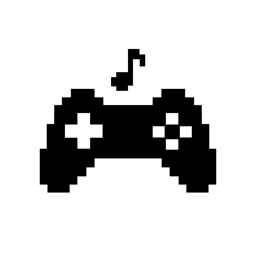

Gamepad MIDI AUv3
Gamepad MIDI turns your game controller into a MIDI controller for iOS. It runs as an AUv3 MIDI plugin on iPhone and iPad.
Getting started
- Connect a game controller that iOS supports.
- Open a music app that hosts AUv3 MIDI plugins and add Gamepad MIDI.
- Route its MIDI output to the synth, drum machine or effect you want to play.
- Tap the plugin window, then play.
Common questions
The plugin doesn't react to the gamepad.
iOS sends gamepad input only to the window in front. Tap the plugin window to give it the gamepad. Tap another window to give it back.
MIDI learn doesn't hear the gamepad.
While another app's MIDI learn is in front, the plugin can't hear the gamepad. Press the control, then tap SEND in the plugin. Then start MIDI learn. The plugin sends the control's lowest value once a second until you tap the plugin again.
Where is my mapping saved?
With your project in the host app. Save the project to keep it.
Contact
Found a bug or have a question? Open an issue on GitHub.